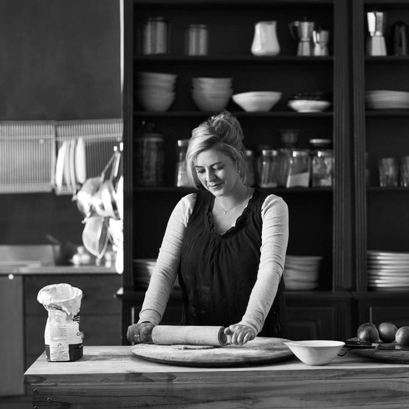
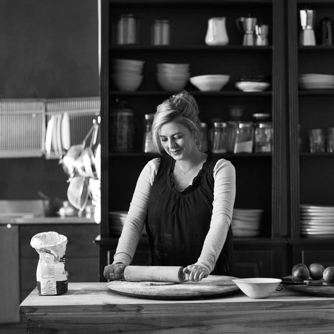

ABOUT
I'm ABCDEFGH, a professional
food stylist,
recipe developer
and food
photographer hunting
down the
delicious things in
life.
I made a liquorice ice cream with chocolate & salted caramel as a homage to the LAKRIDS BY
Classic salt & caramel flavoured confection. I’ve kept the creamy liquorice flavoured ice cream quite
mild in flavour and dialled back the sweetness to accommodate the sugary hit from the salted
caramel
sauce and chocolate ganache which is swirled through. It is utterly sublime and amongst
the most
delicious ice creams, I’ve ever made.
This Chicago deep-dish style pizza is more like a pie
and loaded with your favourite toppings. I fell in love
with this style of pizza…
The creamy ricotta and mature Kerrygold Cheddar
with thyme creates a delicious pizza Bianco base
onto which you place sliced nectarines, twirls of salty
prosciutto…
This sticky toffee, fig & walnut pudding with toffee
sauce is decadent and utterly delicious. I daresay
it might even be the best ever. Queue…
ABOUT
I'm ABCDEFGH, a professional
food stylist,
recipe developer
and food
photographer hunting
down the
delicious things in
life.